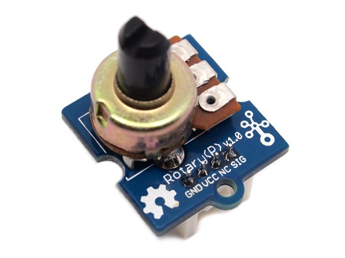

Analog
Generic analog components are all accessed via a common set of C++ functions.


Hardware
Analog component can include the rotary dial, light sensor, servo or others. Unlike digital components, which are either "on" or "off", analog components can either generate or accept a signal anywhere in a range of values (in our case, anywhere between 0 and 5 Volts). These components are connected to one of the analog ("A") ports on the Grove shield:
Software
Functions for interacting with analog pins are prefixed with analog.
Initialization
No special initialization is required for interacting with analog components.
Reading from analog pins
To read an analog value from a sensor such as a light sensor or rotary dial,
use the analogRead() function provided by the core Arduino libraries:
/**
* Read from an analog pin.
*
* @param pin which analog pin to read from
*/
int analogRead(int pin);This will return a value between 0 and 1023, where 0 represents 0 Volts (off) and 1023 represents 5 Volts (on). Intermediate values represent intermediate sensor inputs, e.g., a partially-shaded light sensor or a partially-turned rotary dial.
Writing to analog pins
To write an analog value to an actuator such as a servo,
use the analogWrite() function provided by the core Arduino libraries:
/**
* Write to an analog pin.
*
* @param pin which analog pin to write to
* @param duty the "duty cycle" to set @pre >=0 and < 256
*/
void analogWrite(int pin, int duty);Writing to an analog pin is slightly different from reading. Whereas analog sensors produce voltages between 0 and 5 V, which the Arduino interprets as integers between 0 and 1023, writing to an analog pin doesn’t produce a steady voltage between 0 and 5 V. Instead, analog output is simulated: the pin switches between 0 and 5 V, with the duty cycle determining how much time it spends at 0 vs 5 V.